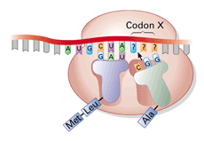

|
|
|
|
Reviewing Concepts 1. The work of several scientists helped to show that the hereditary material is 2. The backbone of nucleic acid polymers is composed of 3. Excluding the stop sequence, how many nucleotides are necessary to code for a polypeptide that is 100 amino acids long? 4. Which of the following occurs first during the process of transcription? 5. Stretches of noncoding nucleotides found in RNA transcripts that interrupt coding sequences are called 6. Which of the following does not directly participate in translation? 7. A geneticist found that a certain mutagen had no effect on the polypeptide coded by a particular gene. This mutagen most likely caused Short Answer 9. Explain why DNA's structure is called "the double helix." 10. Describe the rule of complementary base-pairing. 11. What is the function of DNA polymerases in DNA replication? 12. Explain the "one gene–one polypeptide" hypothesis. 13. Identify three differences between the structures of DNA and RNA. 14. Explain why the triplet code is so named. 15. Explain why the RNA transcripts in eukaryotic cells must be edited. 16. Describe the roles of mRNA, tRNA, and the ribosomes during translation. 17. List and describe two types of mutations that can occur within a gene. Visualizing Concepts
Applying Concepts
20. Analyzing Diagrams Fill in the missing information in the diagram by answering the questions below.  Critical Thinking 22. Comparing and Contrasting How are DNA transcription and replication similar and different? 23. Making Generalizations In a variation on Nirenberg's experiment, suppose you made a "poly-C" RNA molecule. What is the composition of the polypeptide it codes for? Note that you will need to refer to Figure 11-13. 24. Problem Solving For the DNA sequence TACCAAGTGAAAATT, write the sequence of its RNA transcript and the sequence of the polypeptide it codes. (Assume the entire RNA transcript is an exon region.) Refer to Figure 11-13. 25. Making Generalizations Summarize how the insertion of a nucleotide in a DNA sequence can change the effectiveness of a protein. 26. What's Wrong With These Statements? Performance Assessment |